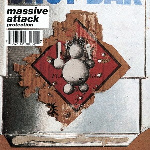
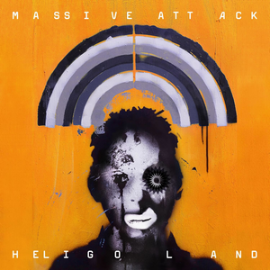

Big Idea
When I was younger there would always be music playing in my home and if it was not Adele or Spinvis playing, it was Massive Attack. Growing up with Massive Attack made me love it from the beginning, and afterwards I slowly started discovering trip hop on my own accord. Trip hop (or downtempo) is a very interesting genre as it blends many genres like dance, hiphop, reggae, dub, rock and even more. Combining all these different sounding genres gives trip hop an incredibly wide range of how it can sound, but it still keeps a surprisingly recognizable sound.
Massive Attack is a music collective that uses trip hop's wide range of sounds to its full extent. Releasing their first album in 1991, they started off with a very hiphop and dub heavy sound, going all the way to 2010, where they released their (for now) last album, with a more produced, textured and electronic sound. The 3 albums in between those two also had their own sound, and this is where the choice of music for the corpus came from.
I want to see if data could show a transition from hiphop/dub heavy production to a more refined, atmospheric, produced sound, and how to visualise this using data from the spotify API. Another thing I want to show is how genre blending Massive Attack is, and how this is visible through audio analysis of one song per album that is representative of the respective album.
Massive Attack is a music collective that uses trip hop's wide range of sounds to its full extent. Releasing their first album in 1991, they started off with a very hiphop and dub heavy sound, going all the way to 2010, where they released their (for now) last album, with a more produced, textured and electronic sound. The 3 albums in between those two also had their own sound, and this is where the choice of music for the corpus came from.
I want to see if data could show a transition from hiphop/dub heavy production to a more refined, atmospheric, produced sound, and how to visualise this using data from the spotify API. Another thing I want to show is how genre blending Massive Attack is, and how this is visible through audio analysis of one song per album that is representative of the respective album.
Blue Lines (1991)

Protection (1994)

Mezzanine (1998)
100th Window (2003)

Heligoland (2010)
Track Selection
Explain why you chose these tracks.
Method
Explain Spotify + audio analysis approach.